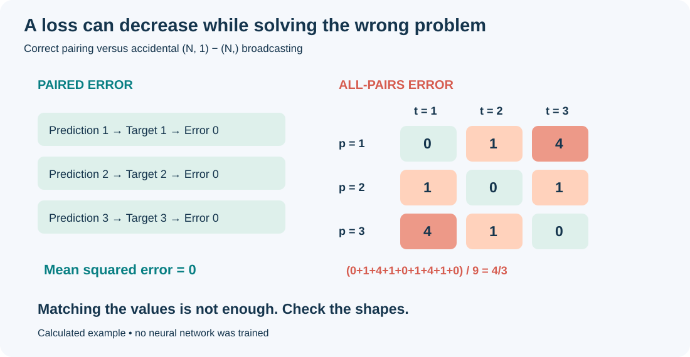
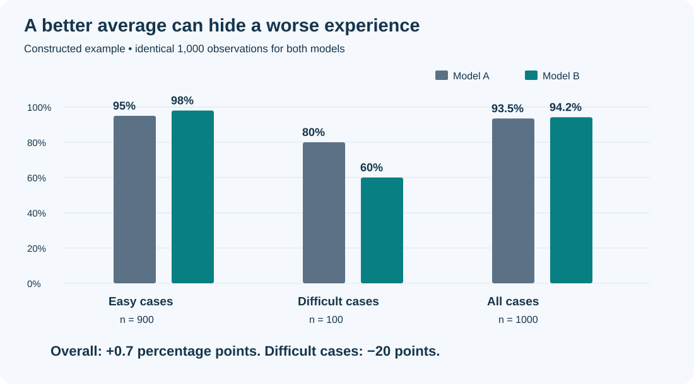
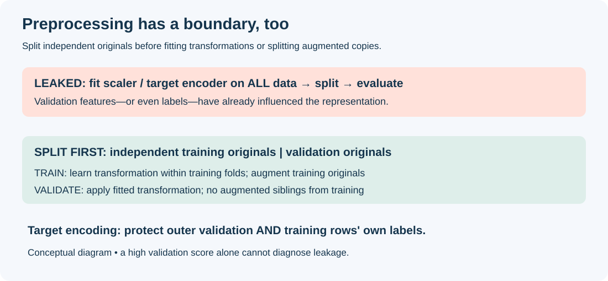
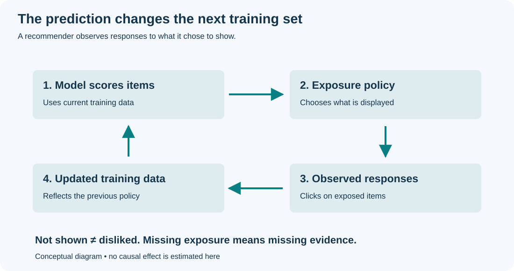

The Stupidest Mistakes in Machine Learning
The program runs. The loss decreases. A checkpoint lands in your output directory.
None of these tells you whether the experiment makes sense.
Some machine learning mistakes produce an exception. The expensive ones produce a convincing chart. You can spend a week tuning a model that is solving the wrong problem, then spend another week explaining its success.
This is a practical collection of ten mistakes, informed by researchers’ experience essays, original papers, and framework documentation. The scenarios and illustrations are original; they are not experiments reported by those authors. “Stupid” describes an avoidable mistake, not the person making it.
1. Choosing a model before understanding the data
What you meant to do: Solve a prediction problem.
What you actually did: Choose a fashionable architecture before inspecting how examples and labels were produced.
A folder named clean_data is not evidence of clean data. A missing value encoded as -999 can become a strong feature. Two annotators may use different definitions of “positive.” A timestamp may record upload time rather than the event you want to forecast.
Sambasivan and colleagues’ Data Cascades study documents how neglected data work causes compounding downstream problems. Its findings come from interviews with practitioners, not a universal statistical law.
Correction: Inspect examples from each label, source, and time period. Read the labeling instructions. Plot missingness and investigate duplicates. Write down what one row represents and what the target actually measures.
When you see -999, establish whether it is a missing-value sentinel or a valid measurement before deciding how to handle it. Feeding an unchecked sentinel to a transformer can make the model learn an encoding convention you never intended it to use.
Correct data must also be available at prediction time
Ask a second question of the same data: Was this feature actually available at prediction time? Random splits of dependent observations and features built from later records can make evaluation misrepresent the intended forecasting task.
A “number of purchases in the next seven days” column might have an innocent name in a feature table. It is still unavailable at today’s prediction time. An event timestamp does not necessarily equal the time the system learned about that event.
Correction: Write down when the prediction is made and what data is available then. Build features using only records already available at that moment, and evaluate on later observations. If outcome windows overlap, check what the partitions share. Splitting by time cannot remove future information already baked into a feature.
Martin Zinkevich’s Rules of Machine Learning recommends testing on data collected after the training period. The exact split should reflect your application and dependence structure.
2. Beating a baseline you never allowed to compete
What you meant to do: Show that a new model improves prediction.
What you actually did: Tune your proposed method extensively, compare it against a poorly configured baseline, and call the difference an architectural advance.
In their 2019 analysis of neural recommendation approaches, Ferrari Dacrema, Cremonesi, and Jannach showed that adequately tuned simpler approaches could outperform several reproduced neural methods. That is evidence about the methods and benchmarks studied, not proof that neural networks never help.
Correction: Give baselines a defensible tuning budget, the same information, and the same evaluation protocol. Include a task-specific heuristic: predicting the last observed value for forecasting, for example. Report compute and latency alongside predictive quality.
“Default settings” is not a fair handicap to impose only on the competitor.
3. Scaling up before fitting a tiny training batch
What you meant to do: Train a useful neural network.
What you actually did: Launch a large run before checking whether a few examples can be learned at all.
Karpathy’s training recipe recommends inspecting the actual tensors and deliberately overfitting a small batch as a debugging step.
Correction: Remove augmentation, simplify the model, and train on a fixed handful of unambiguous examples. With enough capacity and compatible labels, fitting them should be possible. Failure is a reason to investigate labels, loss, gradients, and optimization—not a proof that your model needs another GPU.
If the tiny batch will not fit, print the original records, transformed features, and labels. Check for identical inputs with conflicting targets. For a deterministic binary predictor given the same input once with each label, ordinary unweighted binary cross-entropy is minimized at a shared probability of 0.5, with mean loss log(2) rather than zero. This calculation does not cover every multilabel or context-dependent setup.
Also inspect regularization, capacity, learning rate, and gradients. Failure to fit does not diagnose duplicate-label errors by itself. Successful memorization remains a debugging check, not evidence of generalization.
4. Letting broadcasting rewrite your objective
What you meant to do: Compare each prediction with its corresponding target.
What you actually did: Subtract a prediction array shaped (N, 1) from targets shaped (N,).
Under PyTorch’s broadcasting rules, this subtraction produces an (N, N) matrix. You are comparing every prediction with every target.
# Both arrays describe one scalar per example, but shapes differ.
pred = torch.tensor([[1.0], [2.0], [3.0]]) # (3, 1)
target = torch.tensor([1.0, 2.0, 3.0]) # (3,)
wrong = ((pred - target) ** 2).mean() # 4/3, not zero
assert pred.ndim == 2 and pred.shape[1] == 1
assert target.ndim == 1 and pred.shape[0] == target.shape[0]
pred = pred.squeeze(-1)
assert pred.shape == target.shape
right = ((pred - target) ** 2).mean() # zeroThis is a PyTorch illustration; the companion standard-library script reproduces the arithmetic without PyTorch. It does not train a neural network.

Figure 1. Calculated teaching example. Matching predictions [1, 2, 3] give zero paired error, but the broadcasted objective includes all nine pairwise errors and has mean 4/3.
Correction: Check that each example has exactly one output before adjusting the shape. Even for a single example, (1, 1).squeeze(-1) becomes (1,), preserving the batch axis. Unconditional flatten() can hide a multi-output mistake by flattening everything. If other code needs the two-dimensional predictions, keep the adjusted result in a separate variable.
The wrong loss can still decrease. For independently adjustable predictions, the all-pairs objective pulls every prediction toward the target mean. Convergence does not establish that the objective was right.
5. Applying softmax because “classification needs probabilities”
What you meant to do: Train a multiclass classifier.
What you actually did: Apply softmax, then pass the resulting probabilities to CrossEntropyLoss.
Distinguish the two arguments in CrossEntropyLoss(input, target). The PyTorch documentation specifies:
| Argument | Expected representation |
|---|---|
input: model predictions |
Raw logits; do not apply softmax first |
target: supervision |
Integer class indices, or valid same-shaped class probabilities (soft labels) |
Soft-label support concerns target; it does not change the prediction-side contract. Passing softmax(logits) as input makes the loss treat those numbers as logits and apply log-softmax to them again. The code can run while computing a different objective.
# Classification with one integer class label per example.
logits = model(x) # (batch, classes)
loss = criterion(logits, y) # criterion = CrossEntropyLoss()
probabilities = logits.softmax(dim=-1) # for inspecting predictionsCorrection: Check shapes, dtypes, and values separately for predictions and targets. Class-index targets ordinarily use long; soft targets use floating point and should be nonnegative distributions summing to one across classes. The documentation warns that the framework does not fully validate probability targets. Apply softmax for inspecting predictions outside the loss calculation.
For uniform predictions over C classes, ordinary unweighted cross-entropy is log(C): about 0.693 for two classes and 2.303 for ten. The result also holds for valid soft targets, including uniform targets: their probabilities sum to one, so -sum(q * log(1/C)) = log(C). This assumes no class weighting and a mean of the per-example losses.
6. Confusing evaluation mode with disabled gradients
What you meant to do: Measure a trained model’s validation performance.
What you actually did: Wrap prediction in no_grad() and assume that also switches dropout and batch normalization into evaluation behavior.
These controls do different jobs. model.eval() changes the behavior of relevant modules. Autograd modes control gradient recording; they do not automatically select evaluation mode.
model.eval()
with torch.no_grad():
logits = model(x_valid)
validation_loss = criterion(logits, y_valid)
model.train() # restore training behavior before the next training phaseCorrection: Set both intentionally. With standard running-statistics batch normalization, validation in training mode can update those statistics. Some applications deliberately use stochastic inference; that needs an explicit protocol rather than an accidental mode setting.
7. Reporting the luckiest seed as the algorithm
What you meant to do: Compare two learning methods.
What you actually did: Run each several times, select its best score, and omit the rest.
Bouthillier and colleagues examine multiple sources of variation in benchmark results. Agarwal and colleagues show why uncertainty matters particularly when deep reinforcement learning is evaluated with few runs. Their specific recommendations concern their experimental settings; they should not become a mechanical “five seeds is enough” rule.
Correction: Plan repetitions, preserve all runs, and distinguish initialization variability from sampling, splitting, and tuning variability. Use paired comparisons where the design supports them. Choose uncertainty estimates that match the unit of replication.
A fixed seed aids debugging. It cannot guarantee identical outcomes across environments: the PyTorch reproducibility notes explain the limitations.
8. Letting the average hide the failure
What you meant to do: Improve the model for its intended users.
What you actually did: Celebrate one aggregate score without checking meaningful subgroups or conditions.
Here is a constructed example with 900 easy cases and 100 difficult cases:
| Evaluation slice | Model A correct | Model B correct |
|---|---|---|
| Easy cases, n = 900 | 855 (95%) | 882 (98%) |
| Difficult cases, n = 100 | 80 (80%) | 60 (60%) |
| All cases, n = 1,000 | 935 (93.5%) | 942 (94.2%) |
The aggregate improves by 0.7 percentage points while the difficult slice loses 20 points. This is subgroup performance degradation: an update reduces performance for a particular subgroup while the aggregate improves. Because easy cases account for 90% of observations, their gain outweighs the difficult group’s loss.
This describes the observed behavior. The table alone cannot identify whether training representation, optimization preferences, or another factor caused the decline, and does not diagnose majority bias. The aggregate improvement is real, but the benefit is not shared by every group.

Figure 2. Constructed counts, not measured model performance. The shared vertical scale makes the subgroup decline visible.
Correction: Predefine important slices, report their sizes and uncertainty, and inspect error cases. Avoid selecting only favorable slices after seeing results. A small subgroup estimate may be unstable.
D’Amour and colleagues’ underspecification paper supplies a related warning: similarly strong in-domain scores can coexist with different deployment behavior. One number cannot specify everything you need from a model.
9. Treating preprocessing as an afterthought
What you meant to do: Prepare the inputs, then measure performance on unseen examples.
What you actually did: Fit a global StandardScaler or target encoder before splitting training and validation data. Alternatively, create augmented copies first, then randomly split those copies.
The symptom: Training runs smoothly and validation performance looks unusually good—perhaps even 99% accuracy. That number is a warning to investigate, not a diagnostic test for leakage.
A globally fitted scaler uses validation feature means and variances. Target encoding can additionally use validation labels to define category values. Augmented versions of the same original can cross the split and make the validation examples partly familiar. These are different leakage routes, with different consequences. See the official preprocessing pitfalls guide.
Correction: Split independent originals first. Fit learned preprocessing on training data, then apply it unchanged to validation data. Within cross-validation, repeat fitting inside every training fold. Keep related augmented copies in their original’s partition; training augmentation must preserve the task’s label semantics.
from sklearn.model_selection import train_test_split
from sklearn.preprocessing import StandardScaler
# WRONG: validation observations influence the scaler.
X_scaled = StandardScaler().fit_transform(X)
X_train, X_valid, y_train, y_valid = train_test_split(
X_scaled, y, stratify=y, random_state=42,
)
# RIGHT for independent observations: split before fitting.
X_train, X_valid, y_train, y_valid = train_test_split(
X, y, stratify=y, random_state=42,
)
scaler = StandardScaler()
X_train_scaled = scaler.fit_transform(X_train)
X_valid_scaled = scaler.transform(X_valid)These are illustrative excerpts, not executed model results. Replace the random split when groups or time require another protocol. In cross-validation, put the scaler inside the pipeline rather than fitting it once before the folds.

Figure 3. Original schematic. Training learns the transformation; validation only receives it. Augmented siblings stay with their original. No accuracy values are measured here.
Target encoding must not use a row’s own answer to encode that row. Even within the training set, a row’s own label can leak into its category statistic. Scikit-learn’s TargetEncoder uses internal cross-fitting in fit_transform; this is intentionally different from fit(...).transform(...). Its worked example illustrates why that distinction matters.
from sklearn.preprocessing import TargetEncoder
# X_cat_train / X_cat_valid contain categorical features only.
encoder = TargetEncoder(target_type="binary", random_state=42)
# Training: cross-fit internally so a row does not encode its own label.
X_cat_train_encoded = encoder.fit_transform(X_cat_train, y_train)
# Independent validation: apply the mapping learned from all training data;
# validation labels are never used.
X_cat_valid_encoded = encoder.transform(X_cat_valid)You still need independent validation even if the encoder uses internal cross-fitting. If people have repeated records or observations follow a time order, the internal splits must respect those constraints too.
Leakage does not always produce 99% accuracy; its effect depends on the data and model. If a score looks suspicious, check the order of operations and rerun the evaluation with a clean workflow.
Use the same processing when the model goes live
Avoiding leakage during training is only part of the job. Saving weights while forgetting the scaler, feature order, vocabulary, or missing-value rules can still break predictions in production.
A feature called duration might mean seconds offline and milliseconds online. Both are numbers, so the program may not complain.
Save preprocessing and feature definitions with the model. Use a few fixed inputs to compare offline and online predictions. Sculley and colleagues’ technical-debt paper discusses these maintenance problems around the model.
10. Assuming the model merely observes the world
What you meant to do: Learn from historical behavior and improve future decisions.
What you actually did: Ignore that deploying the prediction system changes the data it later observes.
A recommender shows an item; exposure makes a click possible; the next training set records those clicks. An unseen item receives no click, but that does not tell you whether a user would have liked it. Repeatedly retraining can reinforce the old exposure policy.

Figure 4. Original conceptual diagram. The logged observations depend on both user response and what the system chose to expose.
Perdomo and colleagues’ Performative Prediction studies how predictions change subsequent data. It offers a way to analyze that problem, rather than a ready-made fix for every exposure issue in recommendation.
Correction: Log what was shown and how it was selected, not just what was clicked. Where appropriate, use a controlled experiment to test whether a different recommendation policy helps. Clicks collected under the old policy may not tell you how the new one would perform.
Three checks you can run without a GPU
The companion verification script checks the broadcasted squared-error arithmetic, the uniform-prediction cross-entropy reference, and the subgroup table. It uses only Python’s standard library. Run it from this article’s directory:
python3 examples/verify_examples.pyThose checks verify the constructed examples. They do not validate a model, and the PyTorch snippets above are illustrative excerpts rather than a complete training program.
A practical debugging order is: inspect actual inputs and labels, establish a fair baseline, check the objective and modes, test a tiny training case, then evaluate the full workflow under realistic conditions. Record the intended question alongside every reported score.
The mistake to fear is the one that produces exactly the result you hoped for, before you have checked why.
Further reading
The sources linked throughout this article have different roles: Domingos and Karpathy offer practical perspectives; Zinkevich discusses engineering practice; the benchmark and deployment papers provide evidence within particular settings; PyTorch documentation defines API behavior. None is a universal recipe for every dataset.
Sources checked October 12, 2026. PyTorch API links use version 2.9 for explicit contracts. All figures are original; numerical illustrations are constructed and checked by the included script.